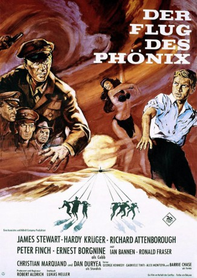
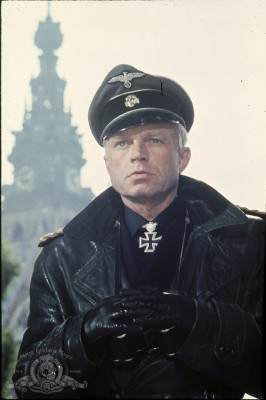

#11152 Der Flug des Phoenix
Alternativ: The Flight of the Phoenix (Englischer Titel)
Auszeichnungen: für 2 Oscars nominiert
 
 IMDB-Wertung: 7.6 / 10
IMDB-Wertung: 7.6 / 10  Metascore: 0
Metascore: 0 
Pilot Frank Towns macht während eines Sandsturms mit seinem Transportflugzeug mitten in der Wüste eine Bruchlandung. Von den dreizehn bunt zusammen gewürfelten Besatzungsmitgliedern an Bord überleben sechs, die vor einem qualvollen Tod durch Verdursten stehen. Der deutsche Ingenieur Heinrich Dorfmann entwickelt einen Plan und bastelt mit den Männern aus den Trümmern ein neues Flugzeug, mit dem sie tatsächlich starten können und das ihnen die Rettung bringt.
Jahr: 1965
Dauer: 141 Minuten
FSK: 12
Land: USA Studio: Twentieth Century-Fox Film CorporationTonspuren:
Untertitel: Deutsch,
Auflösung: 1080p (1920x1040) Größe: 12902 MB
Genre: Drama, Abenteuer
Regisseur: Robert Aldrich
Drehbuch: Lukas Heller, Trevor Dudley Smith
Soundtrack: Frank De Vol
Darsteller:
 James Stewart als Frank Towns
James Stewart als Frank Towns Richard Attenborough als Lew Moran
Richard Attenborough als Lew Moran- Peter Finch als Captain Harris
-  Hardy Krüger als Heinrich Dorfmann
 Ernest Borgnine als Trucker Cobb
Ernest Borgnine als Trucker Cobb Ian Bannen als Crow
Ian Bannen als Crow- Ronald Fraser als Sergeant Watson
- Christian Marquand als Dr. Renaud
- Dan Duryea als Standish
 George Kennedy als Bellamy
George Kennedy als Bellamy- Gabriele Tinti als Gabriele
- Barrie Chase als Farida
- Stanley Ralph Ross als Arab Singer (uncredited)
- Alex Montoya als Carlos
- Peter Bravos als Tasso
- William Aldrich als Bill
Datei: X:\1975\Flug des Phoenix, Der (1965, FSK12, 1920x1040).mkv seit 29.04.2019
Festplatte: HD 1971-1979
 Es gibt insgesamt 27 Filme in der Gruppe '1975'
Es gibt insgesamt 27 Filme in der Gruppe '1975'